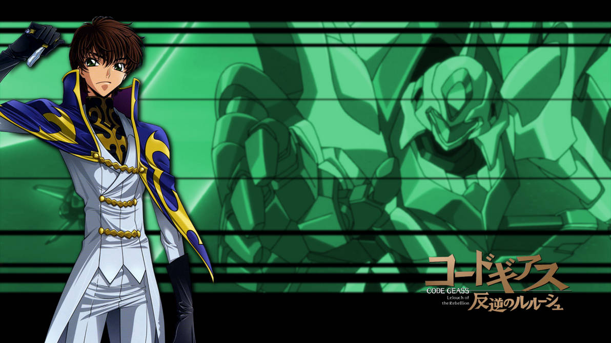
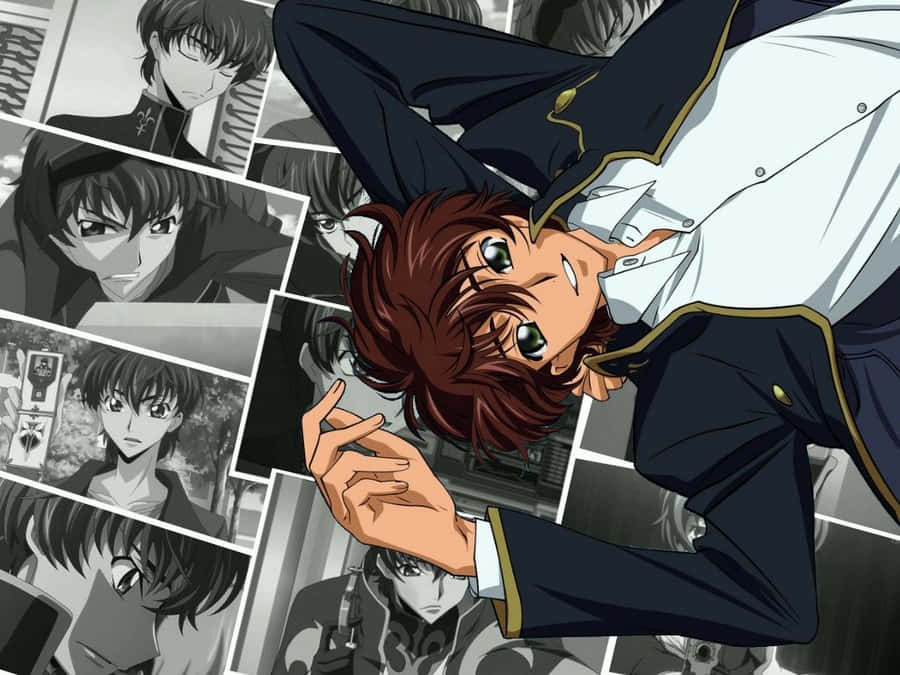
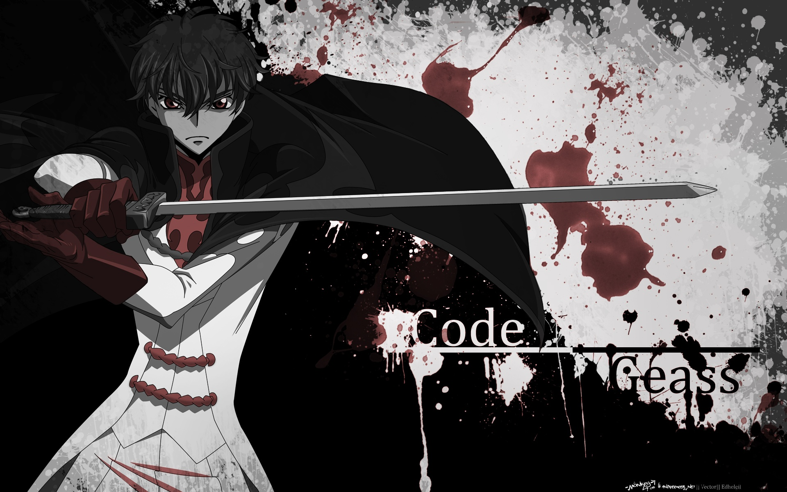

Suzaku Kururugi
Suzaku Kururugi is een belangrijk personage uit de anime
Code Geass: Lelouch of the Rebellion.
Hij is een jeugdvriend van Lelouch en later een soldaat
in het Britannische leger.
Algemene informatie
- Volledige naam: Suzaku Kururugi
- Organisatie: Britannisch leger
- Vrienden: Lelouch Lamperouge
- Afkomst: Japan
Achtergrond
Suzaku is de zoon van de laatste premier van Japan.
Na de overwinning van Britannia besluit hij
bij het Britannische leger te gaan.
Hij gelooft dat hij het systeem van binnenuit kan veranderen
en zo vrede kan brengen.

Uiterlijk
Suzaku heeft kort bruin haar en groene ogen.
Hij draagt meestal het uniform van het Britannische leger.
Tijdens gevechten bestuurt hij de Knightmare Frame Lancelot.
Hij staat bekend om zijn snelle reflexen en vechtvaardigheden.

Persoonlijkheid
Suzaku is eerlijk, rechtvaardig en idealistisch.
Hij gelooft sterk in regels en rechtvaardigheid.
Soms botst zijn visie met die van Lelouch,
die bereid is om extreme maatregelen te nemen.

Rol in het verhaal
Suzaku wordt de piloot van de Knightmare Frame Lancelot
en vecht voor het Britannische leger.
Hij komt vaak tegenover de Black Knights te staan.
Zijn relatie met Lelouch speelt een grote rol
in de ontwikkeling van het verhaal.
Belang
Suzaku vertegenwoordigt het idee dat verandering
ook van binnenuit kan komen.
Zijn conflicten met Lelouch vormen één van
de belangrijkste thema's van de serie.